name: template-default layout: true <div id="slide-controller"> <div id="slide-prev" style="display: inline-block;" onclick="slideshow.gotoPreviousSlide()">◀</div> <div id="slide-next" style="display: inline-block;" onclick="slideshow.gotoNextSlide()">▶</div> </div> --- name: template-title layout: true template: template-default class: slide-title, center --- name: template-section layout: true template: template-default class: slide-section, center, middle --- name: template-page layout: true template: template-default class: slide-page --- name: template-comics layout: true template: template-default class: slide-comics --- template: template-title # Поговорим об описательной статистике перформанс-распределений ## Андрей Акиньшин ### DotNext 2022 Autumn --- layout: true template: template-page --- class: normal ### В прошлой серии... .center[ <iframe width="1000" height="550" src="https://www.youtube.com/embed/gc3yVybPuaY" title="YouTube video player" frameborder="0" allow="accelerometer; autoplay; clipboard-write; encrypted-media; gyroscope; picture-in-picture" allowfullscreen></iframe> ] .bottom-hint-huge[https://www.youtube.com/watch?v=gc3yVybPuaY] --- class: normal ### В прошлой серии... .up7[] .center-wide[  ] --- class: normal ### Нормальное распределение .up[] .center[] -- .up[] <div style="font-size: 70%"> .c[ > *Normality is a myth; there never was, and never will be, a normal distribution.* > ["Testing for normality"](http://webspace.ship.edu/pgmarr/Geo441/Readings/Geary%201947%20-%20Testing%20for%20Normality.pdf), R.C. Geary, 1947 ] </div> --- class: normal ### Обманчивые среднее и дисперсия .up[] .center[] .bottom-hint-huge[Justin Matejka, George Fitzmaurice (2017), ["Same Stats, Different Graphs: Generating Datasets with Varied Appearance and Identical Statistics through Simulated Annealing"](https://www.autodeskresearch.com/publications/samestats), CHI 2017 Conference proceedings: ACM SIGCHI Conference on Human Factors in Computing Systems] --- class: normal ### Обманчивые среднее и дисперсия .center[] .bottom-hint-huge[Justin Matejka, George Fitzmaurice (2017), ["Same Stats, Different Graphs: Generating Datasets with Varied Appearance and Identical Statistics through Simulated Annealing"](https://www.autodeskresearch.com/publications/samestats), CHI 2017 Conference proceedings: ACM SIGCHI Conference on Human Factors in Computing Systems] --- class: normal ### Самопальный IO-бенчмарк ```cs int N = 1000; // Количество итераций var measurements = new long[N]; byte[] data = new byte[64 * 1024 * 1024]; // 64MB ``` --- class: normal ### Самопальный IO-бенчмарк ```cs int N = 1000; // Количество итераций var measurements = new long[N]; byte[] data = new byte[64 * 1024 * 1024]; // 64MB for (int i = 0; i < N; i++) { var stopwatch = Stopwatch.StartNew(); var fileName = Path.GetTempFileName(); `File.WriteAllBytes(fileName, data);` `File.Delete(fileName);` stopwatch.Stop(); measurements[i] = stopwatch.ElapsedMilliseconds; } ``` --- class: normal ### Самопальный IO-бенчмарк .up[] .center[Замеры] .up1[] .center[] --- class: normal ### Самопальный IO-бенчмарк .up[] .center[График плотности распределения] .up1[] .center[] --- class: normal ### Основные проблемы -- * Большой разброс значений -- * Тяжелые хвосты и экстремальные выбросы -- * Мультимодальность -- * Дискретизация -- * Асимметрия --- class: normal ### В этой серии -- .up[] .center[**Описательная статистика**] -- * Центральная тенденция -- * Квантильные оценки -- * Вариация -- * Плотность распределения -- * Мультимодальность -- * Теория экстремальных значений -- .up2[] .center[ <table class="invisible-table"> <tr> <td colspan="3" align="center"><font size="200%"><b>Математический доклад!</b></font></td> </tr> <tr> <td></td> <td></td> <td></td> </tr> </table> ] --- class: normal ### Зачем? .up[] -- .center[] <div style="position: absolute; right: 9%; top: 10%"> <svg xmlns="http://www.w3.org/2000/svg" xmlns:xlink="http://www.w3.org/1999/xlink" width="88" height="25"> <rect x="00" width="100%" height="25" fill="#555"/> <rect x="49" width="100%" height="25" fill="#4c1"/> <g fill="#fff" font-family="Ubuntu Mono" font-size="16"> <text x="5" y="19" textLength="80">stars 8209</text> </g> </svg> <svg xmlns="http://www.w3.org/2000/svg" xmlns:xlink="http://www.w3.org/1999/xlink" width="105" height="25"> <rect x="00" width="100%" height="25" fill="#555"/> <rect x="65" width="100%" height="25" fill="#4c1"/> <g fill="#fff" font-family="Ubuntu Mono" font-size="16"> <text x="5" y="19" textLength="100">used by 12356</text> </g> </svg> <svg xmlns="http://www.w3.org/2000/svg" xmlns:xlink="http://www.w3.org/1999/xlink" width="145" height="25"> <rect x="00" width="100%" height="25" fill="#555"/> <rect x="81" width="100%" height="25" fill="#4c1"/> <g fill="#fff" font-family="Ubuntu Mono" font-size="16"> <text x="5" y="19" textLength="140" class="downloadCounter">downloads 14359866</text> </g> </svg> </div> -- .center[ ] --- template: template-section ## Центральная тенденция --- layout: true template: template-page <div>.footer-note[Центральная тенденция]</div> --- class: normal ### Среднее арифметическое -- $$ x = \\{ x_1, x_2, \ldots, x_n \\}; \quad \overline{x} = \dfrac{x_1 + x_2 + \ldots + x_n}{n} $$ -- $$ x = \\{ 1, 2, 3, 4, 5, 6, 7 \\}; \quad \overline{x} = 4 $$ -- $$ x = \\{ 1, 2, 3, 4, 5, 6, 273 \\}; \quad \overline{x} = 42 $$ -- .center[Среднее арифметическое не является робастным!] -- .center[Может попробуем медиану?] --- class: normal ### Среднее арифметическое vs. медиана $$ x = \\{ x_1, x_2, \ldots, x_n \\}; \quad \overline{x} = \dfrac{x_1 + x_2 + \ldots + x_n}{n} $$ $$ x = \\{ 1, 2, 3, 4, 5, 6, 7 \\}; \quad \overline{x} = 4 $$ $$ x = \\{ 1, 2, 3, 4, 5, 6, 273 \\}; \quad \overline{x} = 42 $$ $$ x = \\{ 1, 2, 3, 4, 5, 6, 7 \\}; \quad \tilde{x} = 4 $$ $$ x = \\{ 1, 2, 3, 4, 5, 6, 273 \\}; \quad \tilde{x} = 4 $$ --- class: normal ### Гауссова эффективность .up2[] .center[] -- $$ \operatorname{GaussianEfficiency}(\operatorname{T}) = \frac{\mathbb{V}(\operatorname{mean})}{\mathbb{V}(\operatorname{T})} $$ -- | | Среднее | Медиана | |-----------------------:|--------:|--------:| | Гауссова эффективность | 100% | 64% | --- class: normal ### Усечённое и винзоризованное среднее -- $$ \definecolor{cbred}{rgb}{0.835, 0.369, 0} x = \\{\textcolor{cbred}{x_1}, \textcolor{cbred}{x_2}, x_3, x_4, x_5, x_6, \textcolor{cbred}{x_7}, \textcolor{cbred}{x_8}\\}, \quad x_i \leq x\sb{i+1} $$ -- .vspace3[] .center[**Усечённое среднее:**] $$ x_{\textrm{trimmed}} = \\{x_3, x_4, x_5, x_6\\} $$ -- $$ \overline{x_{\textrm{trimmed}}} = \dfrac{x_3 + x_4 + x_5 + x_6}{4} $$ -- .vspace3[] .center[**Винзоризованное среднее:**] $$ \definecolor{cbnavy}{rgb}{0, 0.447, 0.698} x_{\textrm{winsorized}} = \\{\textcolor{cbnavy}{x_3}, \textcolor{cbnavy}{x_3}, x_3, x_4, x_5, x_6, \textcolor{cbnavy}{x_6}, \textcolor{cbnavy}{x_6}\\} $$ -- $$ \overline{x_{\textrm{winsorized}}} = \dfrac{\textcolor{cbnavy}{x_3} + \textcolor{cbnavy}{x_3} + x_3 + x_4 + x_5 + x_6 + \textcolor{cbnavy}{x_6} + \textcolor{cbnavy}{x_6}}{8} $$ --- class: normal ### Выбрасываем выбросы -- .up[] .center[] -- <hr/> .center[Есть и другие способы:] .center[] .bottom-hint-huge[Wang, Hongzhi, Mohamed Jaward Bah, and Mohamed Hammad.<br>["Progress in outlier detection techniques: A survey."](https://ieeexplore.ieee.org/abstract/document/8786096) Ieee Access 7 (2019): 107964-108000.] --- class: normal ### Важность выбросов .vspace3[] > .cbred[**The discovery of the ozone hole was announced in 1985**] by a British team working on the ground with “conventional” instruments and examining its observations in detail. > Only later, after reexamining the data transmitted by the TOMS instrument on NASA’s Nimbus 7 satellite, was it found that .cbred[**the hole had been forming for several years**]. > Why had nobody noticed it? > The reason was simple: .cbred[**the systems**] processing the TOMS data, designed in accordance with predictions derived from models, > which in turn were established on the basis of what was thought to be “reasonable”, > .cbred[**had rejected the very (“excessively”) low values**] observed above the Antarctic during the Southern spring. > As far as the program was concerned, there must have been an operating defect in the instrument. > > --- R. Kandel, Our Changing Climate (1991) --- class: normal ### Какая метрика нам нужна? .center[] --- class: normal ### Какая метрика нам нужна? .center[] --- class: normal ### Оценка Ходжеса-Леманна -- .vspace10[] $$ \operatorname{HL} = \underset{i < j}{\textrm{median}} \Bigg( \frac{x_i + x_j}{2} \Bigg) $$ .bottom-hint-huge[Hodges Jr, Joseph L., and Erich L. Lehmann. ["Estimates of location based on rank tests."](https://doi.org/10.1214/aoms/1177704172) The Annals of Mathematical Statistics (1963): 598-611.] --- class: normal ### Сравнение .vspace10[] | | Среднее | Медиана | Ходжес-Леманн | |-----------------------:|--------:|--------:|--------------:| | Гауссова эффективность | 100% | 64% | 96% | --- class: normal ### Сравнение .vspace10[] | | Среднее | Медиана | Ходжес-Леманн | |-----------------------:|--------:|--------:|--------------:| | Гауссова эффективность | 100% | 64% | 96% | | Точка перелома | 0% | 50% | 29% | --- class: normal ### Другие метрики -- * Моды -- * Геометрическое среднее: \\( \sqrt[n]{x\sb{1}x\sb{2}\ldots x\sb{n}} \\) -- * Гармоническое среднее: \\( n / (x\sb{1}^{-1} + x\sb{2}^{-1} + \ldots + x\sb{n}^{-1}) \\) -- * Midhinge: \\( (Q\sb{0.25}(x) + Q\sb{0.75}(x))/2 \\) -- * Trimean: \\( (Q\sb{0.25}(x) + 2Q\sb{0.50}(x) + Q\sb{0.75}(x))/4 \\) -- * ... --- class:normal ### Вывод .conclusion[Для выбора центральной тенденции<br />.cbred[нужно подумать]] --- template: template-section ## Квантильные оценки --- layout: true template: template-page <div>.footer-note[Квантильные оценки]</div> --- class: normal ### Функция плотность распределения .center[] --- class: normal ### Медиана .center[] --- class: normal ### Квартили .center[] --- class: normal ### Децили .center[] --- class: normal ### Процентили .center[] --- class: normal ### Квантили распределения и квантили выборки -- .up2[] .center[Выборка из нормального распределения:] -- .up1[] $$ \definecolor{cbnavy}{rgb}{0, 0.447, 0.698} x = \\{ \textcolor{cbnavy}{-1.37}, -0.19, \textcolor{cbnavy}{0.14}, 0.16, \textcolor{cbnavy}{0.26}, 0.39, \textcolor{cbnavy}{0.46}, 0.74, \textcolor{cbnavy}{0.89} \\} $$ -- .up1[] | | Выборка | .invisible[Распределение] | | ---------------- | ------------- | --------------- | | \\( Q_{0.00} \\) | \\( -1.37 \\) | | | \\( Q_{0.25} \\) | \\( 0.14 \\) | | | \\( Q_{0.50} \\) | \\( 0.26 \\) | | | \\( Q_{0.75} \\) | \\( 0.46 \\) | | | \\( Q_{1.00} \\) | \\( 0.89 \\) | | --- class: normal ### Квантили распределения и квантили выборки .up2[] .center[Выборка из нормального распределения:] .up1[] $$ \definecolor{cbnavy}{rgb}{0, 0.447, 0.698} x = \\{ \textcolor{cbnavy}{-1.37}, -0.19, \textcolor{cbnavy}{0.14}, 0.16, \textcolor{cbnavy}{0.26}, 0.39, \textcolor{cbnavy}{0.46}, 0.74, \textcolor{cbnavy}{0.89} \\} $$ .up1[] | | Выборка | Распределение | | ---------------- | ------------- | --------------- | | \\( Q_{0.00} \\) | \\( -1.37 \\) | \\( -\infty \\) | | \\( Q_{0.25} \\) | \\( 0.14 \\) | \\( -0.67 \\) | | \\( Q_{0.50} \\) | \\( 0.26 \\) | \\( 0.00 \\) | | \\( Q_{0.75} \\) | \\( 0.46 \\) | \\( 0.67 \\) | | \\( Q_{1.00} \\) | \\( 0.89 \\) | \\( +\infty \\) | .up1[] .center[] --- class: normal ### Классификация Хиндмана-Фана .vspace2[] | Тип | h | Уравнение | | ---- | -------------- | -------------------------------------------------------------------------------------------- | | 1 | \\( Np+1/2 \\) | \\( x_{\lceil h - 1/2 \rceil} \\) | | 2 | \\( Np+1/2 \\) | \\( (x\sb\lceil \sb h \sb - \sb 1 \sb / \sb 2 \sb \rceil + x_{\lceil h + 1/2 \rceil})/2 \\) | | 3 | \\( Np \\) | \\( x_{\lfloor h \rceil} \\) | | 4 | \\( Np \\) | \\( x \sb\lfloor \sb h \sb \rfloor +(h-\lfloor h \rfloor)(x \sb \lceil \sb h \sb \rceil \sb -x_{\lfloor h \rfloor}) \\) | | 5 | \\( Np+1/2 \\) | \\( x \sb\lfloor \sb h \sb \rfloor +(h-\lfloor h \rfloor)(x \sb \lceil \sb h \sb \rceil \sb -x_{\lfloor h \rfloor}) \\) | | 6 | \\( (N+1)p \\) | \\( x \sb\lfloor \sb h \sb \rfloor +(h-\lfloor h \rfloor)(x \sb \lceil \sb h \sb \rceil \sb -x_{\lfloor h \rfloor}) \\) | | 7 | \\( (N-1)p+1 \\) | \\( x \sb\lfloor \sb h \sb \rfloor +(h-\lfloor h \rfloor)(x \sb \lceil \sb h \sb \rceil \sb -x_{\lfloor h \rfloor}) \\) | | 8 | \\( (N+1/3)p+1/3 \\) | \\( x \sb\lfloor \sb h \sb \rfloor +(h-\lfloor h \rfloor)(x \sb \lceil \sb h \sb \rceil \sb -x_{\lfloor h \rfloor}) \\) | | 9 | \\( (N+1/4)p+3/8 \\) | \\( x \sb\lfloor \sb h \sb \rfloor +(h-\lfloor h \rfloor)(x \sb \lceil \sb h \sb \rceil \sb -x_{\lfloor h \rfloor}) \\) | .bottom-hint-huge[Hyndman, R. J. and Fan, Y. 1996. [Sample quantiles in statistical packages](https://doi.org/10.2307/2684934), *American Statistician* 50, 361–365.] --- class: normal ### Квантильная оценка Харрела-Дэвиса .up2[] .bottom-hint-huge[Harrell, F.E. and Davis, C.E., 1982. [A new distribution-free quantile estimator](https://dx.doi.org/10.1093/biomet/69.3.635). Biometrika, 69(3), pp.635-640.] -- $$ Q\sb{HD}(p) = \sum_{i=1}^{n} W\sb{i} \cdot x \sb{(i)} $$ -- $$ W\sb{i} = I\sb{i/n}(a, b) - I\sb{(i-1)/n}(a, b) $$ $$ a = p(n+1),\; b = (1-p)(n+1) $$ -- .center[] --- class: normal ### Эффективность квантильной оценки Харрела-Дэвиса .up[] .center[] .bottom-hint-huge[Andrey Akinshin (2022) [Trimmed Harrell-Davis quantile estimator based on the highest density interval of the given width](https://www.tandfonline.com/doi/abs/10.1080/03610918.2022.2050396), Communications in Statistics - Simulation and Computation] --- class: normal ### Доверительные интервалы Мэритц-Джэррэт -- .center[k-ый момент:] $$ C\sb{k} = \sum_{i=1}^n W\sb{i} \cdot x\sb{(i)}^k $$ -- .center[Квантильная оценка Харрела-Дэвиса:] $$ Q\sb{HD}(p) = C_1 $$ -- .center[Оценка доверительного интервала Мэритц-Джэррэт:] $$ s\sb{MJ}(p) = \sqrt{C\sb{2} - C\sb{1}^2} $$ .bottom-hint-huge[Maritz, J. S., and R. G. Jarrett. 1978. [“A Note on Estimating the Variance of the Sample Median.”](https://doi.org/10.1080/01621459.1978.10480027)<br />Journal of the American Statistical Association 73 (361): 194–196.] --- class: normal ### Усечённая квантильная оценка Харрела-Дэвиса -- .up2[] .center[] .up2[] -- .up2[] .center[] .up2[] .bottom-hint-huge[Andrey Akinshin (2022) [Trimmed Harrell-Davis quantile estimator based on the highest density interval of the given width](https://www.tandfonline.com/doi/abs/10.1080/03610918.2022.2050396), Communications in Statistics - Simulation and Computation] --- class: normal ### Квантильная оценка Сфакианакиса-Виргиниса $$ \begin{split} \operatorname{SV1}\sb{p} = &\frac{B\sb{0}}{2} \big( X\sb{(1)}+X\sb{(2)}-X\sb{(3)} \big) + \\\\ & \sum\sb{i=1}^{n} \frac{B\sb{i}+B\sb{i-1}}{2} X\sb{(i)} + \\\\ & \frac{B\sb{n}}{2} \big(- X\sb{(n-2)}+X\sb{(n-1)}-X\sb{(n)} \big),\\\\ \operatorname{SV2}\sb{p} =& \sum\sb{i=1}^{n} B\sb{i-1} X\sb{(i)} + B\sb{n} \cdot \big(2X\sb{(n)} - X\sb{(n-1)}\big),\\\\ \operatorname{SV3}\sb{p} =& \sum\sb{i=1}^n B\sb{i} X\sb{(i)} + B\sb{0} \cdot \big(2X\sb{(1)}-X\sb{(2)}\big). \end{split} $$ .bottom-hint-huge[Sfakianakis, Michael E., and Dimitris G. Verginis. “A new family of nonparametric quantile estimators.” Communications in Statistics—Simulation and Computation® 37, no. 2 (2008): 337-345. See also: https://aakinshin.net/posts/sfakianakis-verginis-quantile-estimator/] --- class: normal ### Квантильная оценка Навруза-Оздемира $$ \begin{split} \operatorname{NO}\sb{p} = & \Big( (3p-1)X\sb{(1)} + (2-3p)X\sb{(2)} - (1-p)X\sb{(3)} \Big) B\sb{0} +\\\\ & +\sum\sb{i=1}^n \Big((1-p)B\sb{i-1}+pB\sb{i}\Big)X\sb{(i)} +\\\\ & +\Big( -pX\sb{(n-2)} + (3p-1)X\sb{(n-1)} + (2-3p)X\sb{(n)} \Big) B\sb{n} \end{split} $$ .bottom-hint-huge[Navruz, Gözde, and A. Fırat Özdemir. ["A new quantile estimator with weights based on a subsampling approach."](https://doi.org/10.1111/bmsp.12198) British Journal of Mathematical and Statistical Psychology 73, no. 3 (2020): 506-521. See also: https://aakinshin.net/posts/navruz-ozdemir-quantile-estimator/] --- class: normal ### Проблема: агрегация истории коммитов -- .up1[] .center[] --- class: normal ### Взвешенные выборки -- $$ x = \\{ x\sb{1}, x\sb{2}, \ldots, x\sb{n} \\} $$ -- $$ w = \\{ w\sb{1}, w\sb{2}, \ldots, w\sb{n} \\} $$ -- .center[Экспоненциальный закон:] $$ w\sb{i} = \alpha^{n-i} $$ -- | | Общий вид | Пример | |---|-----|------| | \\( w\sb{n} \\) | \\( \alpha^0 \\) | 1 | | \\( w\sb{n-1} \\) | \\( \alpha^1 \\) | 0.5 | | \\( w\sb{n-2} \\) | \\( \alpha^2 \\) | 0.25 | | \\( w\sb{n-3} \\) | \\( \alpha^3 \\) | 0.125 | | ... | ... | ... | --- class: normal ### Взвешенные выборки -- .center[**Экспоненциальное сглаживание среднего арифметического**.superscript[1]] $$ s\sb{t} = \alpha x\sb{t} + (1 - \alpha) s\sb{t-1} $$ .bottom-hint-huge2[.superscript[1]https://aakinshin.net/posts/quantile-exponential-smoothing/ <br ><br ><br >] -- .center[**Взвешенная квантильная оценка Харрела-Дэвиса**.superscript[2]] $$ Q\sb{HD} = \sum_{i=1}^n W\sb{i} \cdot x\sb{(i)}, \quad W\sb{i} = I\sb{r\sb{i}}(a, b) - I\sb{l\sb{i}}(a, b) $$ $$ l\sb{i} = \frac{s\sb{i-1}}{s\sb{n}}, \quad r\sb{i} = \frac{s\sb{i}}{s\sb{n}}, \quad s\sb{i} = w\sb{1} + w\sb{2} + \ldots + w\sb{i} $$ .bottom-hint-huge[.superscript[2]https://aakinshin.net/posts/weighted-quantiles/<br />https://aakinshin.net/posts/weighted-quantiles-ci/] --- class:normal ### Вывод .conclusion[Для выбора квантильной оценки<br> .cbred[нужно подумать]] --- template: template-section ## Скользящие квантильные оценки --- layout: true template: template-page <div>.footer-note[Скользящие квантильные оценки]</div> --- class: normal ### Скользящее среднее и скользящая медиана .center[] --- class: normal ### Скользящее среднее и скользящая медиана .center[] --- class: normal ### Скользящее среднее и скользящая медиана .center[] --- class: normal ### Разделённые кучи (Partitioning heaps) -- .up3[] .center[] .bottom-hint-huge[Hardle, W., and William Steiger. [“Algorithm AS 296: Optimal median smoothing.”](https://doi.org/10.2307/2986349 ) Journal of the Royal Statistical Society. Series C (Applied Statistics) 44, no. 2 (1995): 258-264.<br /> See also: https://aakinshin.net/posts/partitioning-heaps-quantile-estimator2/] --- class: normal ### Квантильная оценка P² -- * \\(q_0\\): Минимум * \\(q_1\\): (p/2)-ый квантиль * \\(q_2\\): p-ый квантиль * \\(q_3\\): ((1+p)/2)-ый квантиль * \\(q_4\\): Максимум .bottom-hint-huge[Jain, Raj, and Imrich Chlamtac. ["The P2 algorithm for dynamic calculation of quantiles and histograms without storing observations."](https://doi.org/10.1145/4372.4378) Communications of the ACM 28, no. 10 (1985): 1076-1085 See also: https://aakinshin.net/posts/p2-quantile-estimator/] --- class: normal ### Квантильная оценка P² .up2[] .center[] .bottom-hint-huge[Jain, Raj, and Imrich Chlamtac. ["The P2 algorithm for dynamic calculation of quantiles and histograms without storing observations."](https://doi.org/10.1145/4372.4378) Communications of the ACM 28, no. 10 (1985): 1076-1085 See also: https://aakinshin.net/posts/p2-quantile-estimator/] --- class: normal ### Квантильная оценка MP² -- .center[] .bottom-hint-huge[https://aakinshin.net/posts/mp2-quantile-estimator/] --- class: normal ### Квантильная оценка MP² .center[] .bottom-hint-huge[https://aakinshin.net/posts/mp2-quantile-estimator/] --- class: normal ### t-digest -- .center[] .bottom-hint-huge[https://github.com/tdunning/t-digest] --- class:normal ### Вывод .conclusion[Для выбора квантильной оценки<br> .cbred[нужно подумать]] --- template: template-section ## Вариация --- layout: true template: template-page <div>.footer-note[Вариация]</div> --- class: normal ### Терминология -- .vspace10[] | Русский | English | |:----------|:-----------| | Вариация | Dispersion | | Дисперсия | Variance | --- class: normal ### Стандартное отклонение .up[] $$ s = \sqrt{\frac{1}{n-1} \sum_{i=1}^n (x_i - \bar{x})^2} $$ -- .up[] .center[] --- class: normal ### Обманчивое стандартное отклонение -- .up2[] .center[] .up[] --- class: normal ### Обманчивое стандартное отклонение .up2[] .center[] .up[] -- * \\( \textrm{A} = \mathcal{N}(0, 1^2); \sigma_A = 1 \\) -- * \\( \textrm{B} = 0.95 \mathcal{N}(0, 1^2) + 0.05 \mathcal{N}(0, 49^2); \sigma_B = \sqrt{0.95\cdot 1^2 + 0.05\cdot 49^2} = 11 \\) -- * \\( \textrm{C} = 0.9 \mathcal{N}(0, 1^2) + 0.1 \mathcal{N}(0, 9^2); \sigma_C = \sqrt{0.9\cdot 1^2 + 0.1\cdot 9^2} = 3 \\) --- class: normal ### Медианное абсолютное отклонение (MAD) -- $$ \textrm{MAD} = C\sb{n} \cdot \textrm{median} \Big( |x_i - \textrm{median}(x)| \Big) $$ -- .center[] .bottom-hint-huge[https://aakinshin.net/posts/gumbel-mad/] --- class: normal ### Медианное абсолютное отклонение (MAD) $$ \textrm{MAD} = C\sb{n} \cdot \textrm{median} \Big( |x_i - \textrm{median}(x)| \Big) $$ -- $$ C\sb{\infty} = \dfrac{1}{\Phi^{-1}(3/4)} \approx 1.4826022185056 $$ -- | n | \\( C\sb{n} \\) (HF7) | \\( C\sb{n} \\) (HD) | |---|-----------------------|----------------------| | 2 | 1.77215 | 1.77215 | | 3 | 2.20490 | 1.56816 | | 4 | 2.01667 | 1.59589 | | 5 | 1.80392 | 1.56611 | | 6 | 1.76378 | 1.56656 | |...| ... | ... | .bottom-hint-huge[Andrey Akinshin (2022) “Finite-sample bias-correction factors for the median absolute deviation based on the Harrell-Davis quantile estimator and its trimmed modification,” [arXiv:2207.12005](https://arxiv.org/abs/2207.12005)] --- class: normal ### Нулевые медиана/MAD -- .center[] -- .center[] .bottom-hint-huge[https://aakinshin.net/posts/discrete-performance-distributions/] --- class: normal ### Непрерывные и дискретные распределения -- ```cs // Непрерывные распределения x = { 2174, 1984, 2746, 1596, 1874, 2812, 2245,... } ms y = { 1874, 2207, 1984, 1729, 2301, 1781, 2022,... } ms ``` -- ```cs // Дискретные распределения y = { 6, 6, 6, 6, 6, 6, 6, 6, 6, 6, 6 } ms z = { 6, 7, 7, 6, 6, 6, 7, 6, 6, 7, 7 } ms ``` --- class: normal ### Квантильное абсолютное отклонение (QAD) -- .center[Медианное абсолютное отклонение около медианы:] $$ \textrm{MAD}(x) = C\sb{n} \cdot \textrm{median} \Big( |x_i - \textrm{median}(x)| \Big) $$ -- .center[**Квантильное** абсолютное отклонение около медианы:] $$ \textrm{QAD}(x, p) = C\sb{n} \cdot Q\Big( |x_i - \textrm{median}(x)|, p \Big) $$ -- | Оценка | p | .invisible[Точка перелома] | .invisible[Гауссова эффективность] | |--------------------:|-------:|---------------:|-----------------------:| | MAD | 0.50 | | | | Standard QAD (SQAD) | 0.68 | | | | Optimal QAD (OQAD) | 0.86 | | | .bottom-hint-huge[Andrey Akinshin (2022) “Quantile absolute deviation,” [arXiv:2208.13459](https://arxiv.org/abs/2208.13459)] --- class: normal count: false ### Квантильное абсолютное отклонение (QAD) .center[Медианное абсолютное отклонение около медианы:] $$ \textrm{MAD}(x) = C\sb{n} \cdot \textrm{median} \Big( |x_i - \textrm{median}(x)| \Big) $$ .center[**Квантильное** абсолютное отклонение около медианы:] $$ \textrm{QAD}(x, p) = C\sb{n} \cdot Q\Big( |x_i - \textrm{median}(x)|, p \Big) $$ | Оценка | p | Точка перелома | .invisible[Гауссова эффективность] | |-------------------:|-------:|---------------:|-----------------------:| | MAD | 0.50 | 50% | | | Sandard QAD (SQAD) | 0.68 | 32% | | | Optimal QAD (OQAD) | 0.86 | 14% | | .bottom-hint-huge[Andrey Akinshin (2022) “Quantile absolute deviation,” [arXiv:2208.13459](https://arxiv.org/abs/2208.13459)] --- class: normal count: false ### Квантильное абсолютное отклонение (QAD) .center[Медианное абсолютное отклонение около медианы:] $$ \textrm{MAD}(x) = C\sb{n} \cdot \textrm{median} \Big( |x_i - \textrm{median}(x)| \Big) $$ .center[**Квантильное** абсолютное отклонение около медианы:] $$ \textrm{QAD}(x, p) = C\sb{n} \cdot Q\Big( |x_i - \textrm{median}(x)|, p \Big) $$ | Оценка | p | Точка перелома | Гауссова эффективность | |-------------------:|-------:|---------------:|-----------------------:| | MAD | 0.50 | 50% | 37% | | Sandard QAD (SQAD) | 0.68 | 32% | 54% | | Optimal QAD (OQAD) | 0.86 | 14% | 65% | .bottom-hint-huge[Andrey Akinshin (2022) “Quantile absolute deviation,” [arXiv:2208.13459](https://arxiv.org/abs/2208.13459)] --- class: normal ### Квантильное абсолютное отклонение (QAD) .up[] .center[] .bottom-hint-huge[Andrey Akinshin (2022) “Quantile absolute deviation,” [arXiv:2208.13459](https://arxiv.org/abs/2208.13459)] --- class: normal ### Прочие оценки стандартного отклонения -- .center[**Оценка Шамоса**] $$ \textrm{Shamos} = C\sb{n} \cdot \textrm{median}(|x_i - x_j|\sb{i < j}); \quad C\sb{\infty} \approx 1.048358 $$ .down[] .bottom-hint-huge3[Shamos, M. I. "Geometry and statistics: Problems at the interface. V: JF Traub (Ed.): Algorithms and complexity: New directions and recent results." (1976).<br /><br />] -- .center[**Оценка Руссо-Крукса**] $$ S\sb{n} = C\sb{n} \cdot \textrm{median}\sb{i} \Big( \textrm{median}\sb{j} \big( |x_i-x_j| \big) \Big); \quad C\sb{\infty} \approx 1.1926 $$ $$ Q\sb{n} = C\sb{n} \cdot Q(|x\sb{i} - x\sb{j}|\sb{i < j}, 0.25); \quad C\sb{\infty} \approx 2.2191 $$ .down[] .bottom-hint-huge[Rousseeuw, P., and C. Croux. 1993. [Alternatives to the median absolute deviation.](https://doi.org/10.2307/2291267) Journal of the American Statistical Association 88 (424):1273–83. doi:10.2307/2291267.] --- class: normal ### Сравнение асимптотических оценок стандартных отклонений -- .vspace10[] | | SD | MAD | SQAD | OQAD | Shamos | \\( S\sb{n} \\) | \\( Q\sb{n} \\) | |-----------------------:|-----:|-------:|-----:|-----:|-------:|----------------:|----------------:| | Гауссова эффективность | 100% | 37% | 54% | 65% | 86% | 58% | **82%** | | Точка перелома | 0% | 50% | 32% | 14% | 29% | 50% | **50%** | --- class: normal count: false ### Сравнение **асимптотических** оценок стандартных отклонений .vspace10[] | | SD | MAD | SQAD | OQAD | Shamos | \\( S\sb{n} \\) | \\( Q\sb{n} \\) | |-----------------------:|-----:|-------:|-----:|-----:|-------:|----------------:|----------------:| | Гауссова эффективность | 100% | 37% | 54% | 65% | 86% | 58% | **82%** | | Точка перелома | 0% | 50% | 32% | 14% | 29% | 50% | **50%** | --- class: normal ### Конечные выборки -- .up[] .center[] --- class:normal ### Вывод .conclusion[Для выбора метрики вариации<br> .cbred[нужно подумать]] --- template: template-section ## Плотность распределения --- layout: true template: template-page <div>.footer-note[Плотность распределения]</div> --- class: normal ### Гистограммы .up[] .center[] --- class: normal ### Гистограммы .up[] .center[] .bottom-hint-huge[https://aakinshin.net/posts/misleading-histograms/] --- class: normal ### Гистограммы .up[] .center[] .bottom-hint-huge[https://aakinshin.net/posts/misleading-histograms/] --- class: normal ### Ядерная оценка плотности (KDE) -- .up[] .center[] --- class: normal ### Ядерная оценка плотности (KDE) .up[] .center[] --- class: normal ### Ядерная оценка плотности (KDE) $$ \widehat{f}\sb{h(x)} = \frac{1}{nh} \sum_{i=1}^n K\Big(\frac{x-x\sb{i}}{h}\Big) $$ -- .up[] .center[] .bottom-hint-huge[https://aakinshin.net/posts/kde-bw/] --- class: normal ### Ядерная оценка плотности (KDE) $$ \widehat{f}\sb{h(x)} = \frac{1}{nh} \sum_{i=1}^n K\Big(\frac{x-x\sb{i}}{h}\Big) $$ .up[] .center[] .bottom-hint-huge[https://aakinshin.net/posts/kde-bw/] --- class: normal ### Ядерная оценка плотности (KDE) $$ \widehat{f}\sb{h(x)} = \frac{1}{nh} \sum_{i=1}^n K\Big(\frac{x-x\sb{i}}{h}\Big) $$ .up[] .center[] .bottom-hint-huge[https://aakinshin.net/posts/kde-bw/] --- class: normal ### Ядерная оценка плотности (KDE) .up[] .center[] .bottom-hint-huge[https://aakinshin.net/posts/kde-bw/] --- class: normal ### Ядерная оценка плотности (KDE) .up[] .center[] .bottom-hint-huge[https://aakinshin.net/posts/kde-bw/] --- class: normal ### Ядерная оценка плотности (KDE) .up[] .center[] --- class: normal ### Квантильная оценка плотности (QRDE) .up[] .center[] .bottom-hint-huge[https://aakinshin.net/posts/qrde-hd/] --- class: normal ### Квантильная оценка плотности (QRDE) .up[] .center[] .bottom-hint-huge[https://aakinshin.net/posts/qrde-hd/] --- class: normal ### Квантильная оценка плотности (QRDE) .up[] .center[] .bottom-hint-huge[https://aakinshin.net/posts/qrde-hd/] --- class: normal ### Повторяющиеся элементы (дискретные выборки) .vspace10[] $$ \definecolor{cbred}{rgb}{0.835, 0.369, 0} \definecolor{cbnavy}{rgb}{0, 0.447, 0.698} \definecolor{cbgreen}{rgb}{0, 0.6196078, 0.4509804} \definecolor{cbpink}{rgb}{0.8, 0.4745098, 0.654902} x = \\{ \textcolor{cbred}{1}, \textcolor{cbgreen}{4}, \textcolor{cbpink}{3}, \textcolor{cbnavy}{2}, \textcolor{cbgreen}{4}, \textcolor{cbnavy}{2}, \textcolor{cbpink}{3}, \textcolor{cbgreen}{4}, \textcolor{cbpink}{3}, \textcolor{cbnavy}{2}, \textcolor{cbgreen}{4}, \ldots \\} $$ --- class: normal ### Улучшаем KDE/QRDE с помощью джиттеринга -- .up[] .center[] -- .center[] .bottom-hint-huge[https://aakinshin.net/posts/discrete-sample-jittering/ https://aakinshin.net/posts/qrde-discrete/ ] --- class:normal ### Вывод .conclusion[Для выбора оценки плотности<br> .cbred[нужно подумать]] --- template: template-section ## Мультимодальность --- layout: true template: template-page <div>.footer-note[Мультимодальность]</div> --- class: normal ### Проблема .up[] .center[] --- class: normal ### mvalue <table class="invisible-table" style="width: 100%;"> <tr> <td style="width: 50%;text-align: center;">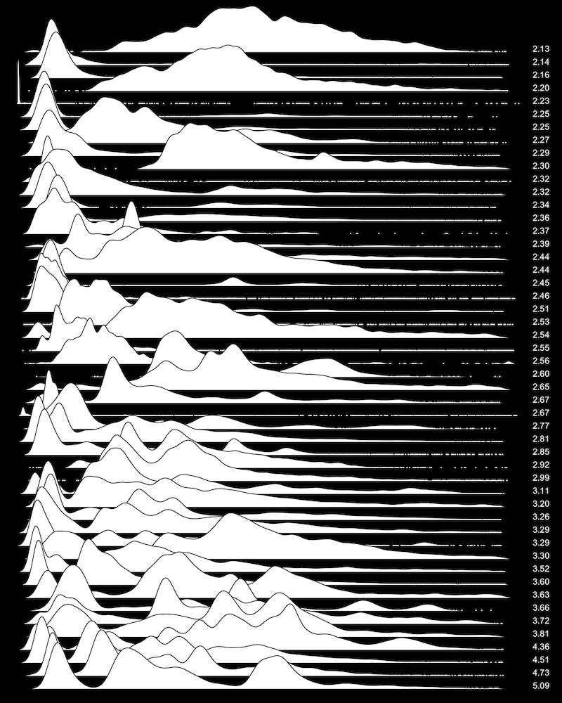</td> <td style="width: 50%;text-align: center;">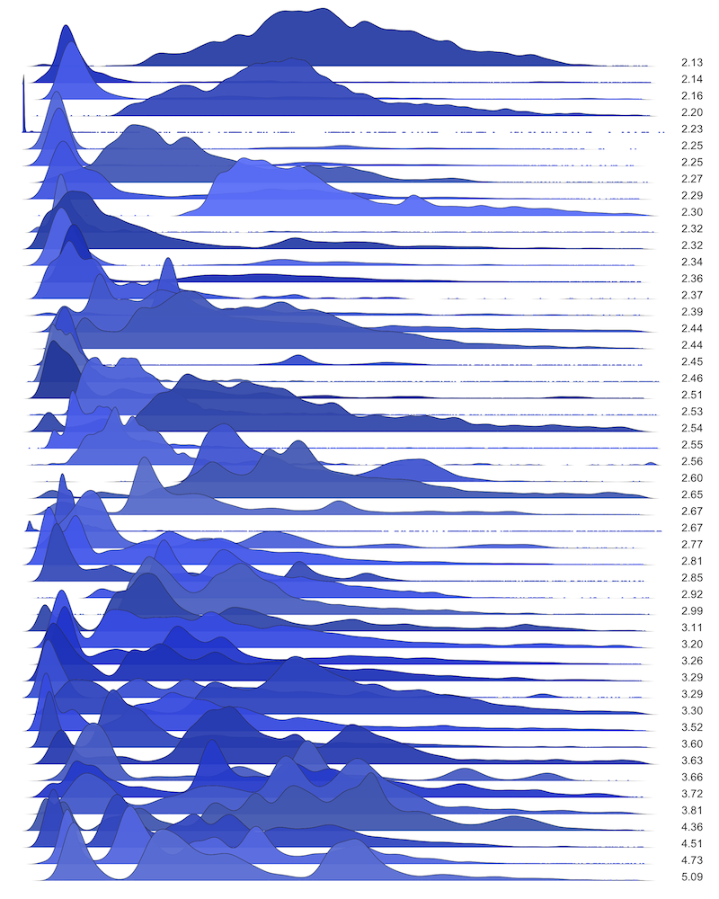</td> </tr> </table> .bottom-hint-huge[http://www.brendangregg.com/FrequencyTrails/modes.html] --- class: normal ### mvalue -- .up[] .center[] .bottom-hint-huge[http://www.brendangregg.com/FrequencyTrails/modes.html] --- class: normal ### mvalue .up[] .center[] .bottom-hint-huge[http://www.brendangregg.com/FrequencyTrails/modes.html] --- class: normal ### mvalue .up[] .center[] .bottom-hint-huge[http://www.brendangregg.com/FrequencyTrails/modes.html] --- class: normal ### mvalue .up[] .center[] .bottom-hint-huge[http://www.brendangregg.com/FrequencyTrails/modes.html] --- class: normal ### mvalue .up[] .center[] .bottom-hint-huge[http://www.brendangregg.com/FrequencyTrails/modes.html] --- class: normal ### mvalue <table class="invisible-table" style="width: 100%;"> <tr> <td style="width: 50%;text-align: center;"></td> <td style="width: 50%;text-align: center;"></td> </tr> </table> .bottom-hint-huge[http://www.brendangregg.com/FrequencyTrails/modes.html] --- class: normal ### Lowland multimodality detection -- .up[] .center[] .bottom-hint-huge[https://aakinshin.net/posts/lowland-multimodality-detection/] --- class: normal ### Lowland multimodality detection .up[] .center[] .bottom-hint-huge[https://aakinshin.net/posts/lowland-multimodality-detection/] --- class: normal ### Lowland multimodality detection .up[] .center[] .bottom-hint-huge[https://aakinshin.net/posts/lowland-multimodality-detection/] --- class: normal ### Lowland multimodality detection .up[] .center[] .bottom-hint-huge[https://aakinshin.net/posts/lowland-multimodality-detection/] --- ### Интермодальные выбросы -- .up[] .center[] .bottom-hint-huge[https://aakinshin.net/posts/intermodal-outliers/] --- class:normal ### Вывод .conclusion[Для детектирования мультимодальность<br> .cbred[нужно подумать]] --- template: template-section ## Теория экстремальных значений --- layout: true template: template-page <div>.footer-note[Теория экстремальных значений]</div> --- class: normal ### График .up[] .center[] --- class: normal ### Гидрология .up[] .center[] .bottom-hint-huge[Источник данных: http://www.nevariver.ru/flood_list.php] --- class: normal ### Наводнение в Санкт-Петербурге (1824г) .up[] .center[] .bottom-hint-huge[https://ru.m.wikipedia.org/wiki/Файл:7_ноября_1824_года_на_площади_у_Большого_театра.jpg] --- class: normal ### Санкт-Петербургская дамба .up[] .center[] .bottom-hint-huge[https://www.google.com/maps/@59.9552059,29.915138,10z] --- class: normal ### Распределение уровней наводнений .up[] .center[] --- class: normal ### Тяжёлые хвосты .up[] .center[] --- class: normal ### Примеры распределений .vspace10[] | Лёгкий хвост | Тяжёлый хвост | |:-----------------|:--------------| | Равномерное | Парето | | Нормальное | Логнормальное | | Бета | Коши | | Экспоненциальное | Фреше | | Вейбул (k>1) | Вейбул (k<1) | --- class: normal ### Приложения теории экстремальных значений -- * Гидрология * Эпидемиология * ... -- * Финансы * Страхование * ... -- * **Перформанс-анализ** --- class: normal ### Центральная предельная теорема .up[] -- $$ x = \\{ x\sb{1}, x\sb{2}, \ldots, x\sb{n} \\} $$ -- $$ y = (x\sb{1} + x\sb{2} + \ldots + x\sb{n}) $$ -- .center[] --- class: normal ### Теорема Фишера-Типпетта-Гнеденко .up[] -- $$ x = \\{ x\sb{1}, x\sb{2}, \ldots, x\sb{n} \\} $$ -- $$ y = \max(x\sb{1}, x\sb{2}, \ldots, x\sb{n}) $$ -- .center[] --- class: normal ### Теорема Пикандса-Балкемы-де Хаана .up[] -- $$ x = \\{ x\sb{1}, x\sb{2}, \ldots, x\sb{n} \\} $$ -- $$ y\sb{u} = \\{ x\sb{i} | x\sb{i} > u \\} $$ -- .center[] --- class: normal ### Теория экстремальных значений: R-пакеты -- .center[] .bottom-hint-huge[https://cran.r-project.org/web/views/ExtremeValue.html] --- class: normal ### Теория экстремальных значений: R-пакеты .center[] .bottom-hint-huge[https://cran.r-project.org/web/views/ExtremeValue.html] --- class: normal ### Выбираем проговое значение .center[POT (Peak Over Threshold)] -- ```r tcplot(data, u.range, cmax = FALSE, r = 1, ulow = -Inf, rlow = 1, nt = 25, which = 1:npar, conf = 0.95, lty = 1, lwd = 1, type = "b", cilty = 1, ask = nb.fig < length(which) && dev.interactive(), ...) mrlplot(data, u.range, main, xlab, ylab, nt = max(100, length(data)), lty = rep(1,3), col = c('grey', 'black', 'grey'), conf = 0.95, lwd = c(1, 1.5, 1), ...) lmomplot(data, u.range, nt = max(50, length(data)), identify = TRUE, ...) exiplot(data, u.range, tim.cond = 1, n.u = 50, xlab, ylab, ...) diplot(data, u.range, main, xlab, ylab, nt = max(200, nrow(data)), conf=0.95, ...) ``` .bottom-hint-huge[https://cran.r-project.org/web/packages/POT/index.html] --- class: normal ### Аппроксимируем обобщённое распределение Парето .center[POT (Peak Over Threshold)] .center[] .bottom-hint-huge[https://cran.r-project.org/web/packages/POT/index.html] --- class:normal ### Вывод .conclusion[Для использования<br />теории экстремальных значений<br> .cbred[нужно подумать]] --- template: template-section ## Заключение --- layout: true template: template-page <div>.footer-note[Заключение]</div> --- class: normal ### Проблемы .center[**Особенности перформанс-распределений**] * Большой разброс значений * Тяжелые хвосты и экстремальные выбросы * Мультимодальность * Дискретизация * Асимметрия --- class: normal ### Решения -- * Непараметрическая статистика -- * Робастная статистика -- * Поддержка мультимодальности -- * Поддержка дискретизации -- * Фокус на конечных выборках -- .center[ ] --- class: normal ### Нелинейность умножения процентов -- $$ 0.95^{20}\phantom{ \approx 35.8\%} $$ --- class: normal count: false ### Нелинейность умножения процентов $$ 0.95^{20} \approx 35.8\% $$ -- $$ 0.96^{20} \approx 44.2\% $$ -- $$ 0.97^{20} \approx 54.4\% $$ -- $$ 0.98^{20} \approx 66.8\% $$ -- $$ 0.99^{20} \approx 81.8\% $$ -- $$ 0.995^{20} \approx 90.5\% $$ -- $$ 0.999^{20} \approx 98.0\% $$ --- class: normal ### Хорошие книжки .up[] <table class="book-table"> <tr> <td><a href="https://www.goodreads.com/book/show/12086837" target="_blank">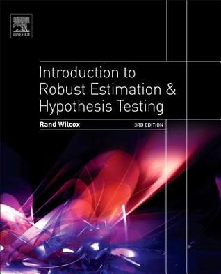</a></td> <td><a href="https://www.goodreads.com/book/show/193506" target="_blank">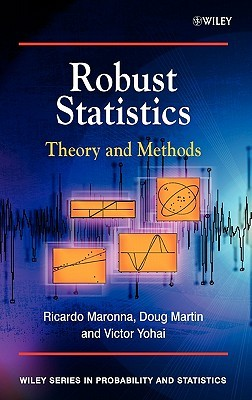</a></td> <td><a href="https://www.goodreads.com/book/show/1074716" target="_blank">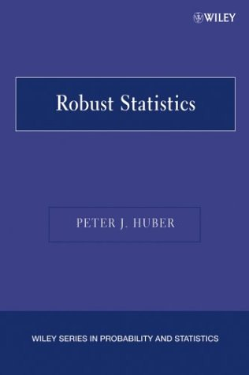</a></td> <td><a href="https://www.goodreads.com/book/show/489242" target="_blank">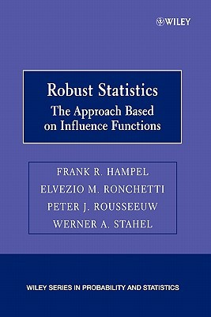</a></td> <td><a href="https://www.goodreads.com/book/show/32602296" target="_blank"></a></td> <td><a href="https://www.goodreads.com/book/show/10765705" target="_blank">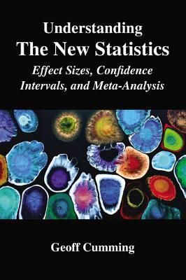</a></td> </tr> <tr> <td><a href="https://www.goodreads.com/book/show/22758795" target="_blank">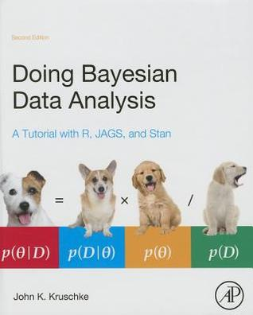</a></td> <td><a href="https://www.goodreads.com/book/show/26619686" target="_blank">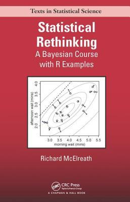</a></td> <td><a href="https://www.goodreads.com/book/show/41392893" target="_blank">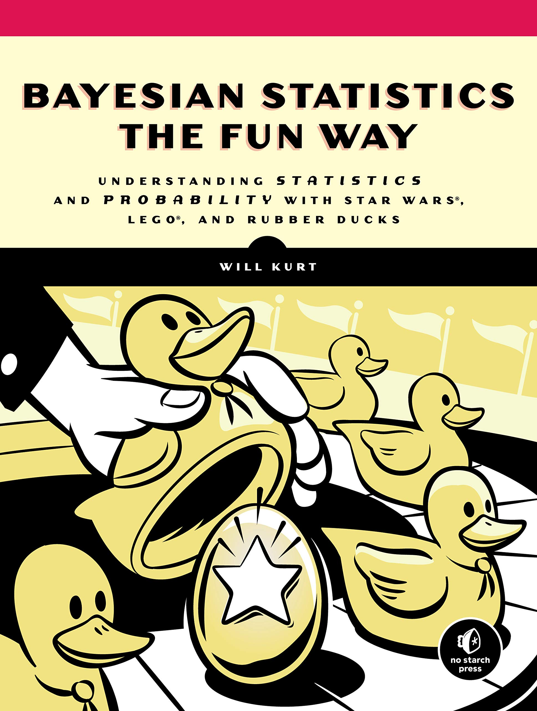</a></td> <td><a href="https://www.goodreads.com/book/show/2241187" target="_blank">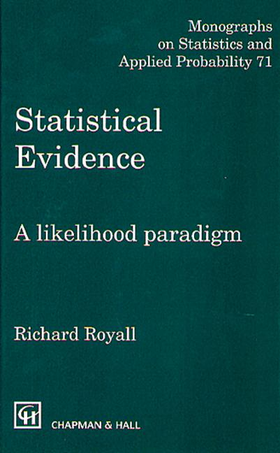</a></td> <td><a href="https://www.goodreads.com/book/show/23241062" target="_blank">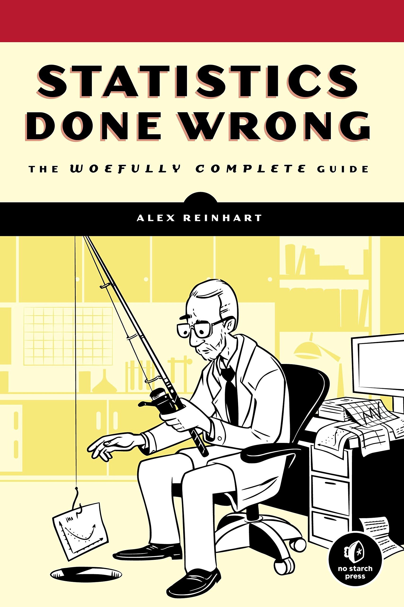</a></td> <td><a href="https://www.goodreads.com/book/show/51291" target="_blank">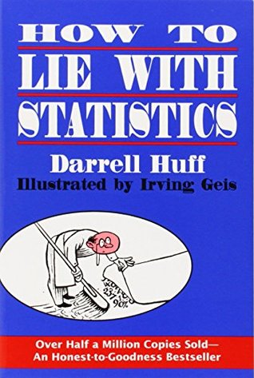</a></td> </tr> <tr> <td><a href="https://www.goodreads.com/book/show/147358" target="_blank">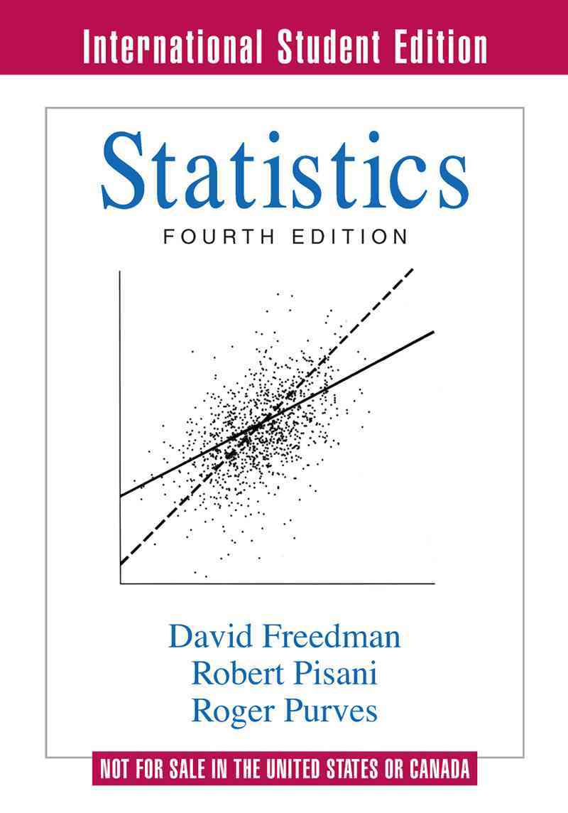</a></td> <td><a href="https://www.goodreads.com/book/show/2023435" target="_blank">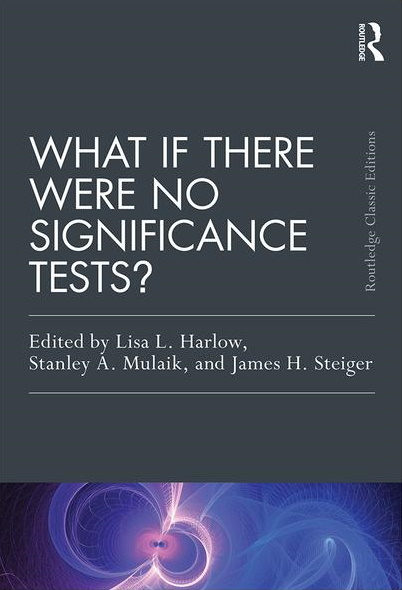</a></td> <td><a href="https://www.goodreads.com/book/show/9488513" target="_blank">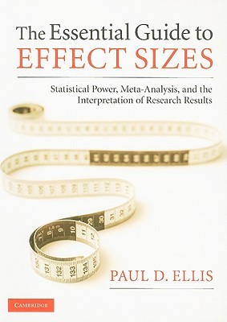</a></td> <td><a href="https://www.goodreads.com/book/show/61192108" target="_blank">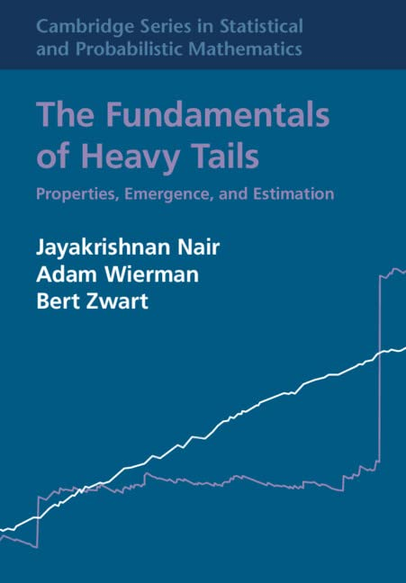</a></td> <td><a href="https://www.goodreads.com/book/show/646395" target="_blank">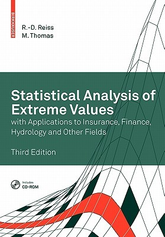</a></td> <td><a href="https://www.goodreads.com/book/show/52686856" target="_blank">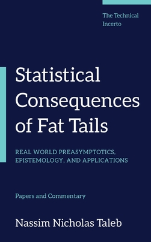</a></td> </tr> </table> <!-- <td><a href="https://www.goodreads.com/book/show/905654" target="_blank">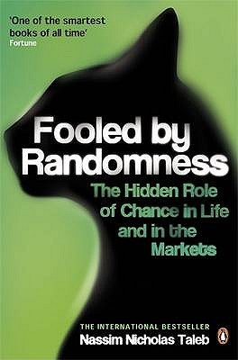</a></td> --> <!-- https://www.goodreads.com/book/show/23338671-workload-modeling-for-computer-systems-performance-evaluation --> --- layout: true template: template-page --- template: template-comics .center[] .comics[ Спасибо за внимание! ] <div style="position: absolute;right: 2em;bottom: 2em;"> <a href="https://aakinshin.net">https://aakinshin.net</a><br /> <img src="img/favicons/github.svg" class="favicon" /><a href="https://github.com/AndreyAkinshin">https://github.com/AndreyAkinshin</a><br /> <img src="img/favicons/twitter.svg" class="favicon" /><a href="https://twitter.com/andrey_akinshin">https://twitter.com/andrey_akinshin</a><br /> <a href="mailto:andrey.akinshin@gmail.com">mailto:andrey.akinshin@gmail.com<a/> </div> <div>.footer-note[© 2022 Андрей Акиньшин | CC BY-NC-SA 4.0]</div>